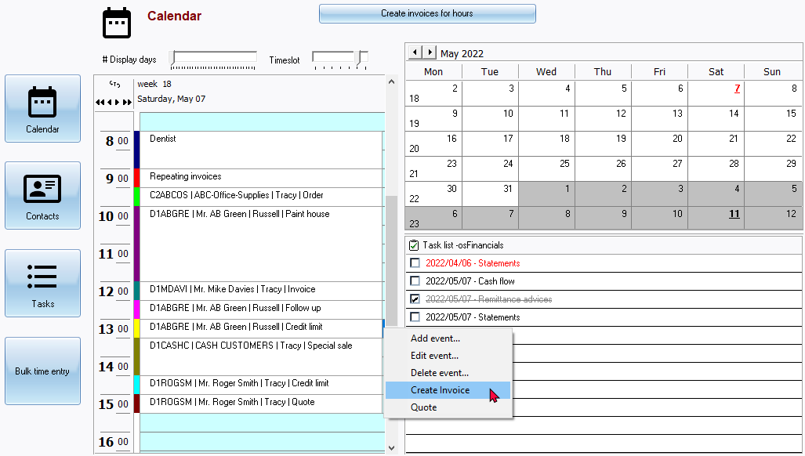

Calendar / Planner
In osFinancials, the Calendar feature provides a comprehensive tool for managing your agenda, tasks, appointments, contacts, and more within a Set of Books. It offers a range of functionalities to help you stay organised and efficiently handle your events and tasks in a Set of Books.
One of the key features of the Calendar is its ability to schedule events with various recurrence options. You can set events to repeat on a daily, weekly, monthly (by day or date), yearly (by day or date), or custom interval. This allows you to automate the scheduling of repetitive events, such as meetings, reminders, or recurring invoices.
The Calendar supports different event types, including general appointments, repeating invoices for managing regular billing processes, debtor appointments for scheduling interactions with customers or clients (with the option to create quotes and invoices directly from these appointments), and creditor appointments for scheduling interactions with suppliers. Additionally, you can schedule hours to invoice debtors based on time spent and generate quotes for those hours, which can later be edited and converted into invoices.
To make it easier to distinguish between different event categories, the Calendar uses colour coding, which helps visually identify the type of event when displayed in the Calendar view.
In addition to event management, the Calendar also provides functionalities to handle tasks. You can add, edit, and delete tasks, allowing you to maintain a to-do list and set completion dates for each task. Furthermore, the Calendar allows you to manage contacts, enabling you to search, add, edit, or delete contacts within your Set of Books.
Another notable feature is the bulk time entry option, which facilitates the efficient processing of quotes and invoices for specific salespersons, debtor accounts, and stock items. You can allocate time slots for each entry, streamlining the invoicing process for time-based services or activities.
Overall, the Calendar in osFinancials serves as a powerful tool for managing your agenda, tasks, appointments, contacts, and bulk time entries. It offers a comprehensive set of features to enhance your organisation, productivity, and invoicing processes within the software.
The Calendar is a powerful tool, which integrates your agenda (tasks, appointments, contacts, etc.) in a Set of Books. You may manage all your events in this Calendar with options to set the recurrence of an event (i.e. daily, weekly, monthly by day, monthly by date, yearly by day, yearly by date or custom, where you may specify the interval in days).
In addition to scheduling all your events, the Calendar has a powerful reminder system which may be set to remind you of a scheduled event, or task, well in advance (from any number of minutes, hours and even days).
Event categories
The Calendar feature offers the flexibility to schedule and create various types of events or appointments. You can schedule or add events in the following categories:
- Appointment (General): This category allows you to schedule general appointments, such as meetings with a bank manager or lunches with clients or colleagues.
- Repeating invoices: If you have recurring invoices that need to be processed or copied regularly, you can schedule them as repeating invoices. This feature simplifies the task of generating invoices for repetitive transactions.
- Hours: This category allows you to schedule services rendered on an hourly basis. Once the hours are scheduled, you have the option to generate Quotes based on the scheduled hours. These Quotes can be edited if necessary to ensure accuracy. After finalizing the Quotes, you can convert them into Invoices.
- Debtors appointment: You have the ability to schedule up to six different categories of appointments with debtors (customers/clients). These categories can be customized based on your specific needs and can include appointments for specials, accounts, or any other relevant category. Moreover, you can create quotes and invoices directly from these debtor appointments, streamlining your quotations and invoicing processes.
- Creditors appointment: This category allows you to schedule appointments with creditors (suppliers/vendors). You can use this feature to keep track of important meetings or discussions with your suppliers regarding orders, accounts, or any other related matters.
By leveraging these features in the Calendar, you can effectively manage and track various types of appointments, schedule repeating invoices, and create invoices for debtor appointments, all within osFinancials.
|
|
The Calendar feature utilises colour coding to visually distinguish between different categories of events. This makes it easier to identify and differentiate the types of events when they are displayed on the Calendar. The colour-coded system helps you quickly recognise and navigate through your scheduled events, improving efficiency and organisation. |

In osFinancials, the Calendar feature offers additional functionality to manage tasks, contacts, and bulk time entries.
- Tasks: You can use the Calendar to manage your tasks effectively. This includes adding, editing, and deleting tasks such as bank reconciliation, printing debtor statements, printing creditor remittance advises, and more. By keeping track of your tasks in the Calendar, you can easily monitor and complete your to-do list.
- Contacts: The Calendar provides a convenient way to manage your contacts. You can find contacts by clicking on the alphabetical keys and perform various actions like adding, editing, or deleting contacts. This allows you to keep your contact information organized and easily accessible within the Calendar.
- Bulk time entry: The Calendar feature also allows for bulk time entry. This functionality enables you to select a salesperson, debtor (customer/client) account, and stock item. You can then add time in specific slots to process invoices for the designated times and days. Bulk time entry simplifies the process of invoicing for multiple time entries, making it more efficient and less time-consuming.
By incorporating tasks, contacts, and bulk time entry into the Calendar, osFinancials provides a comprehensive platform for managing various aspects of your business operations in one centralized location.
Access and views of the Calendar
|
|
The Calendar is (by default) not displayed when you open a Set of Books. You may set the "Show calendar" option in Setup → System parameters to launch the Calendar as default view when you Open a Set of Books. |
To access the Calendar:
- On the Default ribbon, select Calendar.
 - The Display listing four (4) icons will be displayed. You may click on the following icons to change or display the view of the Calendar:
- Agenda - This is the default view of the Planner (Calendar). It displays the following three sections:
- Day view - This displays the selected day in time intervals of one hour each. If any events, or appointments, have been scheduled for the selected date, they will be displayed.
|
|
You can also use the slider to view up to a week (seven days) at a time. |
- Calendar by month - displays the dates for the selected month. The selected day will be displayed in a red font colour.
|
|
If any events, or appointments, have been scheduled for any dates within the selected month, the day will be underlined and displayed in a bold font style. |

- Tasks - Lists all tasks, if any. Displays the tasks in the full viewable area.
- Contacts - Lists all the contacts created in the Set of Books alphabetically. You may find and filter contacts by clicking on alphabetical character buttons.
|
|
You may also manage (add, edit or delete ) contacts in addition to Contacts on the (Default ribbon). |
- Bulk entry time entry - Select the salesperson, debtor (customer / client) account and the stock item. Add time in slots to process invoices for the times and days.
|
|
Multi-User calendar (agenda) - Manual - Shop - Licence : Once-off - This plugin adds the multi-user agenda (multiple agendas) to the Calendar (Planner). You can add agendas and link them as default to the current user. For every agenda a tab will appear in the agenda Calendar so you can see what the appointments, etc. are on other agendas. You can have a agenda for each employee, salesperson, user, etc. and create invoices directly from his / her agenda with a simple click. Each agenda has it's own calendar and task list. |